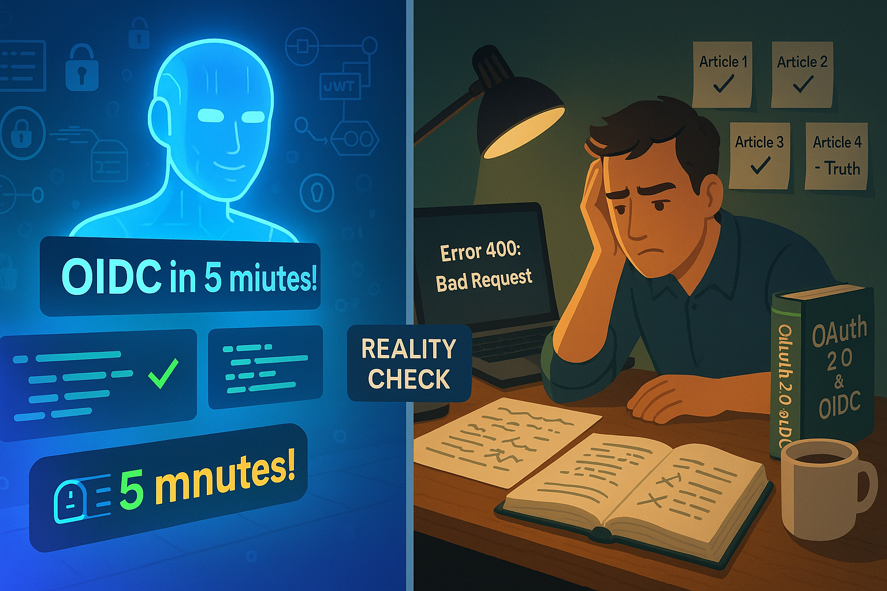

Quando a IA N�o Tem Todas as Respostas: A Jornada Real do OIDC
Sobre este artigo: Escrito como reflex�o honesta sobre limita��es de IA em projetos t�cnicos complexos. Baseado em experi�ncia real da Cara Core Informática entre agosto e outubro de 2025.
O Dia em que a IA Nos Disse que Estava Tudo Certo (Mas N�o Estava)
Era uma ter�a-feira ensolarada de setembro quando Marcelo, desenvolvedor s�nior da Cara Core, entrou na sala de reuni�es com uma express�o que a equipe conhecia bem. Aquela mistura de frustra��o e confus�o que aparece quando algo que "deveria funcionar" simplesmente n�o funciona.
"Olha, fiz exatamente o que o ChatGPT mandou. Tr�s vezes. Com tr�s prompts diferentes. O c�digo est� impec�vel, a documenta��o bate, mas quando vou autenticar com o Google... erro 400. Nada faz sentido."
Ali come�ou a jornada de tr�s meses da Cara Core tentando implementar OIDC (OpenID Connect) - um sistema de autentica��o segura que grandes empresas como Google, Microsoft e Facebook usam para permitir que voc� fa�a login em outros sites usando suas contas. A equipe publicou tr�s artigos confiantes sobre o tema (Parte I, Parte II e A Jornada OIDC). Geraram c�digo com IA. Seguiram tutoriais online. E falharam.
Esta — a hist�ria do que a Cara Core aprendeu quando a intelig�ncia artificial encontrou seus limites - e por que isso importa para qualquer empres�rio investindo em tecnologia.
A Promessa Sedutora da IA
A Cara Core n�o vai mentir: quando a equipe come�ou esse projeto, estavam empolgados. As IAs generativas prometem o mundo:
- "Descreva o que voc� quer e eu crio o c�digo"
- "Implementa��o de OIDC em 5 minutos"
- "Siga este tutorial passo a passo"
E sabe o que — mais perigoso? O c�digo que a IA gera realmente parece profissional. Tem coment�rios explicativos, segue boas pr�ticas, usa bibliotecas modernas. Para um olho menos treinado (e �s vezes at� para o treinado), est� perfeito.
A equipe rodou o c�digo localmente. Funcionou. Publicaram o primeiro artigo: "OIDC descomplicado — como acabar com o caos de senhas". Receberam elogios. Compartilhamentos. Coment�rios positivos.
Mas quando tentaram colocar em produ��o, conectar com os servidores reais do Google e Microsoft, autenticar usu�rios de verdade... nada funcionava.
O Abismo Entre "Funciona na Minha M�quina" e "Funciona na Produ��o"
Aqui est� a verdade inconveniente sobre IA e desenvolvimento de software: ela — excelente em gerar c�digo que funciona em ambientes controlados, mas terr�vel em prever os 10 mil detalhes que fazem diferen�a no mundo real.
O Que Aconteceu na Jornada da Cara Core
Artigo 1 - Outubro 15: OIDC descomplicado — como acabar com o caos de senhas
? C�digo testado apenas localmente
? Funcionou em ambiente simulado
? Confian�a: 95%
Artigo 2 - Outubro 27: OIDC na pr�tica — exemplos t�cnicos e implementa��o
? Integraram com provedores reais
? Primeiros erros cr�ticos aparecem
? Confian�a: 70%
Artigo 3 - Outubro 31: A Jornada OIDC: Como Transformamos a Autentica��o da Cara Core
? Ainda n�o estava funcionando completamente
? Maquiaram dificuldades como "desafios superados"
? Confian�a: 40%
Realidade atual: A equipe comprou um livro f�sico especializado nos EUA. Chegar� em 2 semanas. Reconheceram que precisam estudar de verdade, n�o apenas copiar c�digo.
Por Que OIDC — T�o Dif�cil (E Por Que IA N�o Resolve)
Deixe-me explicar de forma simples por que algo "t�o usado pelas grandes empresas" — t�o dif�cil de implementar:
1. Cada Provedor — Um Mundo Diferente
Imagine que voc� est� construindo uma fechadura universal que precisa funcionar com chaves do Google, Microsoft, Facebook e Apple. Todos dizem que seguem o "padr�o OIDC", mas:
- O Google exige configura��es de redirect_uri exatas (um caractere errado = falha)
- A Microsoft tem 3 tipos diferentes de contas (pessoal, trabalho, Azure AD)
- Cada um valida tokens de forma ligeiramente diferente
- As mensagens de erro s�o gen�ricas e n�o dizem o que est� errado
A IA n�o sabe dessas nuances porque elas n�o est�o em tutoriais - est�o em documenta��o t�cnica densa, issues do GitHub, e experi�ncia pr�tica.
2. Seguran�a N�o Tolera "Quase Certo"
Quando voc� implementa autentica��o, n�o pode errar. Um pequeno erro pode:
- Expor dados de usu�rios
- Permitir acesso n�o autorizado
- Violar leis como LGPD/GDPR
- Destruir a reputa��o da empresa
A IA gera c�digo que parece seguro, mas pode ter vulnerabilidades sutis que s� especialistas identificam.
3. Debugging Exige Contexto Profundo
Quando algo quebra (e vai quebrar), voc� precisa entender:
- Como funciona o fluxo OAuth 2.0 por baixo dos panos
- O que significam c�digos de erro cr�pticos como "invalid_grant"
- Como inspecionar e validar tokens JWT manualmente
- Diferen�as entre authorization code flow, implicit flow, PKCE
ChatGPT pode explicar isso superficialmente, mas n�o te prepara para debugar problemas reais �s 2h da manh� quando o sistema est� fora do ar.
A Li��o de US$ 45 D�lares
Depois de semanas girando em c�rculos, a equipe da Cara Core fez algo que n�o fazia h� anos: comprou um livro t�cnico.
N�o um e-book. Um livro f�sico. De uma editora americana especializada. Custou US$ 45 + frete internacional. Chegar� em 2 semanas.
Por qu�? Porque perceberam que:
- Tutoriais online s�o rasos - ensinam o "como" mas n�o o "por qu�"
- Documenta��o oficial — densa - assume conhecimento que voc� n�o tem
- IA gera respostas gen�ricas - n�o adaptadas ao seu contexto espec�fico
- Livros t�cnicos s�rios - foram revisados por especialistas, testados em dezenas de cen�rios, organizados pedagogicamente
Isso soa antiquado? Talvez. Mas sabe o que — mais antiquado? Fingir que entende algo que n�o entende.
O Que Isso Significa Para Empres�rios e Gestores
Se voc� gerencia projetos de tecnologia ou est� considerando investir em desenvolvimento, esta hist�ria tem li��es pr�ticas:
1. Desconfie de Prazos Irrealistas
Se um desenvolvedor diz: "Com IA, fa�o isso em 2 dias", pergunte:
- Voc� j� implementou algo similar antes?
- Quanto tempo reservou para testes em produ��o?
- O que acontece se houver problemas que a IA n�o previu?
Tecnologia de seguran�a cr�tica n�o tem atalhos.
2. Investimento em Conhecimento Real N�o — Opcional
Aquele livro de US$ 45? — barato. Sabe o que — caro?
- 3 meses de trabalho de um desenvolvedor s�nior (R$ 30.000+)
- Refazer c�digo que "funcionava" mas n�o funciona (R$ 15.000+)
- Publicar artigos confiantes e depois ter que admitir erros (credibilidade)
- Lan�ar um produto com falhas de seguran�a (incalcul�vel)
Tempo de estudo com material de qualidade n�o — custo - — economia.
3. IA — Ferramenta, N�o Substituto
Pense na IA como um estagi�rio muito inteligente que:
O que IA FAZ BEM:
- Acelera tarefas repetitivas
- Gera prot�tipos r�pidos
- Explica conceitos b�sicos
- Encontra erros �bvios de sintaxe
O que IA N�O FAZ:
- N�O substitui experi�ncia
- N�O entende contexto complexo
- N�O assume responsabilidade
- N�O sabe o que n�o sabe
4. Honestidade T�cnica Constr�i Confian�a
A Cara Core poderia ter mantido os tr�s artigos como est�o, fingindo que tudo funcionou perfeitamente. Muitas empresas fazem isso - mostram apenas sucessos, escondem fracassos.
Mas credibilidade a longo prazo vem de admitir limita��es, aprender de verdade, e voltar com solu��es reais.
Nota: Se voc� leu os artigos anteriores da Cara Core sobre OIDC (Parte I, Parte II e Jornada) e est� se perguntando "mas eles n�o disseram que funcionou?" - voc� est� certo em questionar. Este artigo — a corre��o honesta daquela narrativa.
A Jornada Continua: O Que Vem a Seguir
Ent�o, onde a Cara Core est� agora?
Status do Projeto OIDC:
- Em pausa para estudo aprofundado
- Aguardando livro especializado
- Laborat�rio de testes em ambiente isolado
- Documentando cada descoberta real
Pr�ximos Artigos:
- Temas que a equipe domina de verdade (AWS, Python, M365)
- S�rie futura: "OIDC: O Que Aprendemos Errando" (quando realmente funcionar)
Se voc� ainda n�o leu a jornada inicial da Cara Core:
A equipe convida voc� a conhecer os tr�s artigos que publicaram sobre OIDC, onde mostraram conceitos e implementa��es - mas agora com a consci�ncia de que eram apenas os primeiros passos de uma caminhada muito mais longa:
- OIDC descomplicado (Parte I) - Introdu��o conceitual para leigos
- OIDC na pr�tica (Parte II) - Exemplos t�cnicos com Python e JavaScript
- A Jornada OIDC - O "relato de sucesso" (que agora a equipe sabe foi prematuro)
Eles continuam sendo �teis para entender o b�sico - mas leia este artigo primeiro para ter contexto do que realmente aconteceu!
As Tr�s Verdades que a Cara Core Aprendeu
Verdade 1: Complexidade Real Exige Esfor�o Real
Sistemas de seguran�a como OIDC existem h� anos. Empresas gastam milh�es desenvolvendo-os. N�o — arrog�ncia de "tecnologia complicada" - — necessidade de cobrir milhares de casos de borda.
Pensar que IA resolve isso em minutos — como achar que um aplicativo de tradu��o te torna fluente em japon�s. Ajuda? Sim. Substitui anos de estudo? N�o.
Verdade 2: Conhecimento Profundo Tem Fontes Profundas
Informa��o de qualidade custa tempo ou dinheiro (�s vezes ambos):
- Livros t�cnicos revisados por especialistas
- Cursos estruturados com instrutores experientes
- Consultorias de quem j� errou e acertou
- Confer�ncias onde profissionais compartilham casos reais
IA treinada em "conte�do gratuito da internet" s� vai te dar a m�dia do que est� dispon�vel - e a m�dia nem sempre — boa.
Verdade 3: Admitir Limites — For�a, N�o Fraqueza
Os melhores desenvolvedores que a equipe da Cara Core conhece dizem "n�o sei" com frequ�ncia. Os piores fingem que sabem tudo.
Empresas que admitem desafios e mostram como os superam geram mais confian�a que as que vendem perfei��o inexistente.
Para Levar Para Casa
Se voc� — empres�rio ou gestor:
- IA — excelente aceleradora, p�ssima substituta de especialistas
- Projetos complexos precisam de tempo real de aprendizado
- Desconfie de solu��es "m�gicas" para problemas dif�ceis
- Invista em equipe que admite quando n�o sabe algo
Se voc� — desenvolvedor:
- Copiar c�digo de IA sem entender — bomba-rel�gio
- Estude fundamentos, n�o apenas ferramentas
- Livros e cursos estruturados ainda t�m valor enorme
- Honestidade t�cnica constr�i reputa��o duradoura
Se voc� — pessoa curiosa sobre tecnologia:
- IA mudou o mundo, mas n�o acabou com especializa��o
- Seguran�a e sistemas cr�ticos n�o t�m atalhos
- Conhecimento real leva tempo - e tudo bem
- As melhores hist�rias incluem os fracassos
Ep�logo: A Conta Chegou (E Foi Mais Barata Que Fingir)
Neste momento, h� um livro t�cnico viajando de navio dos EUA para o Brasil. Quando chegar, a equipe da Cara Core vai estud�-lo p�gina por p�gina. Fazer testes. Documentar descobertas. Errar. Aprender.
E quando finalmente tiverem OIDC funcionando de verdade - n�o em ambiente simulado, mas em produ��o real, com usu�rios reais, sob condi��es reais - escrever�o um artigo definitivo.
Esse artigo vai valer mais que os tr�s anteriores juntos, porque ter� algo que IA n�o pode gerar: experi�ncia real de quem foi ao fundo do po�o e voltou com conhecimento de verdade.
At� l�, a Cara Core est� escrevendo sobre o que realmente domina. E aprendendo humildemente sobre o que n�o domina.
Porque no fim, a tecnologia mais importante n�o — IA, OIDC ou qualquer sigla da moda.
� a capacidade de reconhecer o que voc� n�o sabe - e fazer o trabalho duro de aprender de verdade.
Notas Finais
O livro que a Cara Core encomendou: Um guia t�cnico especializado em OAuth 2.0 e OpenID Connect de editora americana respeitada (a equipe n�o vai citar o nome antes de validar se — realmente bom).
Leia a jornada completa:
Se voc� quiser acompanhar toda a trajet�ria da Cara Core com OIDC desde o in�cio, aqui est�o os artigos anteriores (agora voc� sabe o "final da hist�ria"):
- 15/10/2025 - OIDC descomplicado — como acabar com o caos de senhas (Parte I)
Onde a equipe explicou OIDC com analogias e casos de uso. Ainda — uma boa introdu��o conceitual! - 27/10/2025 - OIDC na pr�tica — exemplos t�cnicos e implementa��o (Parte II)
C�digo Python, JavaScript e integra��o com GitHub Actions. Funciona em laborat�rio, mas... - 31/10/2025 - A Jornada OIDC: Como Transformamos a Autentica��o da Cara Core
O "relato de sucesso" que agora a equipe sabe foi otimista demais. Li��es valiosas sobre debugging.
Transpar�ncia: Este artigo — um reconhecimento p�blico de que a Cara Core errou ao confiar excessivamente em IA para um problema complexo. A equipe est� comprometida em voltar com implementa��o real e funcional.
Quer Conversar? Se voc� passou por desafios similares (IA prometeu demais, projeto complicou), a Cara Core adoraria trocar experi�ncias.
Hashtags
Contato
- E-mail: suporte@caracore.com.br
- Site: www.caracore.com.br
- LinkedIn: Cara Core Informática
Conecte-se conosco no LinkedIn para mais conte�dos sobre desenvolvimento e inova��o tecnol�gica!
Seguir no LinkedIn